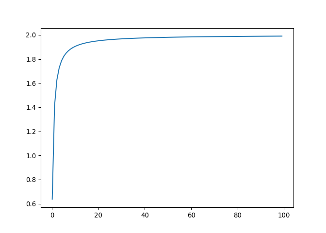
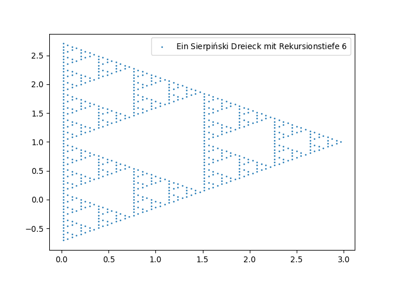
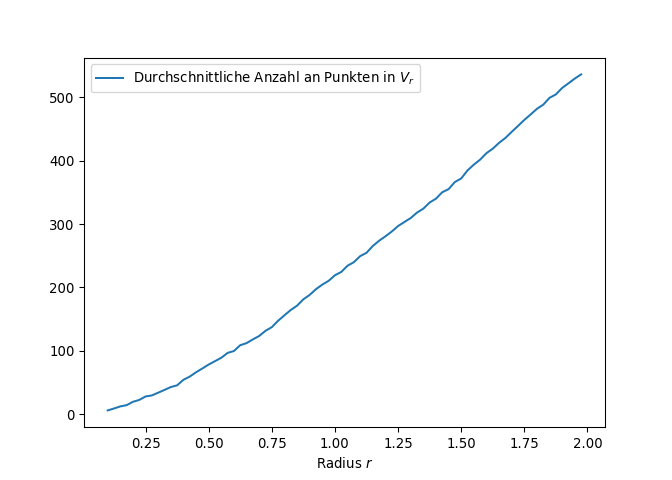
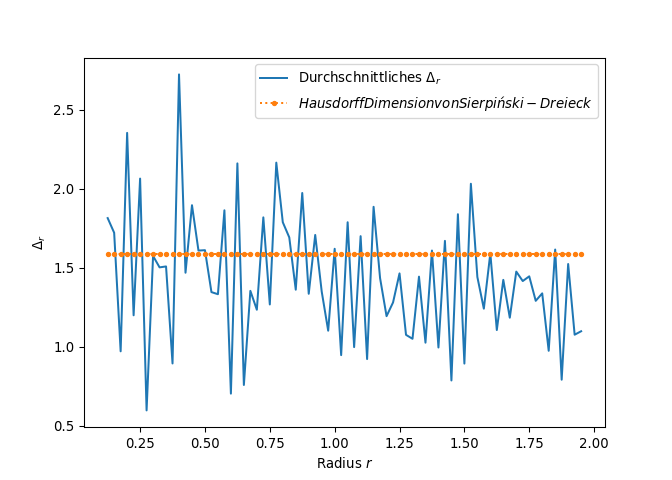

neue Art Dimension zu zählen
Einleitung in die Theorie
Vor einigen Tagen bin ich auf den Artikel Finally We May Have a Path to the Fundamental Theory of Physics… and It’s Beautiful von Stephen Wolfram, einem amerikanischen Wissenschaftler und Erfinder von WolframAlpha gestoßen.
In seinem Artikel geht es um seine neue Theorie der Physik, welche auf gerichteten Graphen und deren Veränderungen unter der Auswirkung von Regeln aufbaut. Für genauere Infos ist hier die ganze Version: www.wolframphysics.org/technical-introduction/
Unter anderem werden durch seine Theorie mathematische Räume aus Graphen gebildet. Also Knoten welche untereinander vernetzt sind.
Auswirkung auf Dimensionalität
Nun bildet sich die Frage, was uns dies über die Dimensionalität von Räumen sagen kann.
Vieles zu diesem Thema kann man in dem Artikel durchlesen. Doch kurz zusammengefasst, kann man mittels dieser Graphen die Dimension eines Raumes generallisieren. Diese Generallisierung kann man dann sogar auf andere mathematische Objekte ausdehnen, sodass man den Dimensionsbegriff generell erweitern kann. Somit wird es uns möglich, auch über “2.5”-Dimensionalen Raum zu reden, oder auch “\(\pi\)“-Dimensionale Räume zu betrachten. Wichtig ist dabei, dass wir nicht nur auf klassische Vektorräume bestehend aus Tupeln (z.B. \(\mathbb{R}^3\)) begrentz sind, sondern jede Menge, welche mit einer Metrik versehen ist, als unser Raum verwendet werden kann.
Das interessante ist hier also, dass dieser neue Begriff der Dimension alleine von einer Menge und einer darauf definierten Metrik abhängt, doch ein rein topologischer Raum, scheint dafür nicht auszureichen.
Meine ersten Ideen
Zuerst war es für mich recht kompliziert, diesen Begriff für metrische Räume zu übersetzen. Doch im Endeffekt waren die Formeln eigentlich die selben, nur habe ich es mir selber unnötig kompliziert gemacht, indem ich selber noch herumgeforscht habe:
Meine Ideen zum Dimensionsbegriff</blockquote>
Wie funktioniert dieser Dimensionsbegriff?
Betrachte folgende Graphen:


Beide stellen da, wie sich Sphären in einem Gitter ausbreiten. Das wird,
so Herr Wolfram folgender Maßen gebildet: “Start at some point in the
hypergraph. Then follow \(r\) hyperedges in all possible ways. You’ve
effectively made the analog of a “spherical ball” in the
hypergraph."1
Nun kann man für beliebige Graphen einen Punkt wählen, und Zählen, wie
viele Punkte in \(r\) Schritten oder weniger erreichbar sind. Sollte
diese Ausbreitung der eines Polynoms ähnlich sein, so kann man anhand
des Grades dessen die Dimension bestimmen. Das genaue bestimmen ist
jedoch nicht trivial und wird im Kapitel 4.6 vom Wolfram Physics
Project2 genauer erklärt3 4
Berechnung der Dimension
Hinweis
In dem Folgenden wird eine von mir entwickelte Version betrachtet,
welche an das
Original
nur angelehnt ist.
Berechnung
Sei \((M,d)\) ein metrischer Raum.
- \(M\) ist Menge
- \(d: M\times M \rightarrow \mathbb{R}_{\ge 0}\) ist eine Metrik
Sei \(V_{r,x} = |\{y \in M \mid d(x,y) \le r\}|\) die Anzahl aller
Punkte eines Balles mit Radius \(r\).
Sei
\(\Delta_{r,x} = \frac{\log(V_{r+1,x})-\log(V_{r,x})}{\log(r+1)-\log(r)} = \frac{\log\frac{V_{r+1,x}}{V_{r,x}}}{\log{\frac{r+1}{r}}}\).
Nun gilt folgendes:
\[\text{dim}(M,d) = \begin{cases}
\lim_{r\rightarrow \infty}\Delta_{r,x} & \text{wenn}\> |M|\ge\infty \wedge |V_{r,x}|<\infty\\
\lim_{r\rightarrow \infty}\Delta_{r,x} & \text{(?) wenn}\> |M|\ge\infty \wedge |V_{r,x}|\ge\infty\\
\begin{gather}
v\in\mathbb{R}_{\ge 0} \text{ mit } \\
|\{\Delta_{v\pm\epsilon,x}\}| = \max |\{\Delta_{w\pm\epsilon,x}\}|\\
\forall \epsilon,w\in\mathbb{R}_{\ge 0}
\end{gather} & \text{wenn}\> |M|<\infty
\end{cases}\]
Beispiel 1
\[\begin{aligned}
M & = \mathbb{Z} \\
d(x,y) & = |x+y| \\
V_{r,x}& = 2r \\
\Delta_{r,x} &= \frac{- \log{\left(2 r \right)} + \log{\left(2 r + 2 \right)}}{- \log{\left(r \right)} + \log{\left(r + 1 \right)}} \\
\lim_{r\rightarrow\infty}\Delta_{r,x} &= 1
\end{aligned}\]
Hier stimmt die Dimension offensichtlich mit der herkömmlichen
Definition überein.
Beispiel 2
\[\begin{aligned}
M & = \mathbb{Z}^2 \\
d(x,y) & = |x_1+y_1 + x_2+y_2| \\
V_{r,x}& = 2r^2+2r+1 \quad\forall x\in M\\
\Delta_{r,x} &= \frac{\log{\left(2 r + 2 \left(r + 1\right)^{2} + 3 \right)} - \log{\left(2 r^{2} + 2 r + 1 \right)}}{- \log{\left(r \right)} + \log{\left(r + 1 \right)}} \\
\lim_{r\rightarrow\infty}\Delta_{r,x} &= 2
\end{aligned}\]
import numpy as np
import matplotlib.pyplot as plt
V = lambda r: 2*r**2+2*r+1
Delta = lambda r: (np.log(V(r+1))-np.log(V(r)))/(np.log(r+1)-np.log(r))
xn = np.arange(0.1, 100,1)
fig, ax = plt.subplots()
ax.plot(xn, Delta(xn))
ax.grid()
plt.show()

Auch hier stimmen die Definitionen überein.
Beispiel 3
Ein Sierpiński Dreieck kann folgender Maßen gebildet werden:
import matplotlib.pyplot as plt
import numpy as np
sirp = lambda x: [[],[],[]] if x==[] else [ sirp(v) for v in x]
repeat = lambda f,x,n: f(x) if n==1 else f(repeat(f,x,n-1))
points = []
start = np.array([1,1])
angle = 2*np.pi/3 # Winkel zwischen Punkten
length = 1 # Anfangslänge eines Punktes zum nächsten
decay = 0.5 # Koeffizient, mit dem bei jeder Iterationstiefe die Länge zwischen Punkten sinkt
def calc(data, current_point=start, length=length):
if len(data)==0:
points.append(current_point)
for i in range(len(data)):
newpoint = current_point+np.array([
length * np.cos(angle * i),
length * np.sin(angle * i),
])
calc(data[i], newpoint, length*decay)
# Sierpiński Dreieck mit Rekursionstiefe rt
rt = 6
data = repeat(sirp, [], rt)
calc(data)
# Zeichnen
x, y = np.array(points).T
fig, ax = plt.subplots()
ax.scatter(x, y, s=1)
plt.legend(['Ein Sierpiński Dreieck mit Rekursionstiefe $'+str(rt)+'$'])
plt.show()
# Nun berechnen wir V_r für jeden Punkt für verschiedene r

rn = np.arange(0.1,2,0.025)
d = np.hypot
U = lambda r,p: [ q for q in points if d(*(p-q))<=r ]
V = lambda r,p: len(U(r,p))
def avg(r):
"""berechne die durchschnittliche Anzahl an Punkten in einer r großen Umgebung
"""
total = 0
for p in points:
total += V(r,p)
total /= len(points)
return total
val = [avg(r) for r in rn]
fig, ax = plt.subplots()
ax.plot(rn, val)
plt.xlabel('Radius $r$')
plt.legend(['Durchschnittliche Anzahl an Punkten in $V_r$'])
plt.show()
# Delta berechnung

dn = [rn[i] for i in range(1,len(rn)-1)]
Delta = lambda i: (np.log(val[i+1])-np.log(val[i]))/(np.log(rn[i+1])-np.log(rn[i]))
dval = [Delta(i) for i in range(len(dn))]
fig, ax = plt.subplots()
ax.plot(dn, dval)
ax.plot(dn, [np.log2(3) for _ in dn], '.:')
plt.xlabel('Radius $r$')
plt.ylabel('$\Delta_r$')
plt.legend(['Durchschnittliches $\Delta_r$', '$Hausdorff Dimension von Sierpiński-Dreieck\approx\log_2(3)$'])

Dies bewegt sich nahe der Hausdorff
Dimension von einem
Sierpiński-Dreieck und zeigt, dass diese Methode genereller ist, als
die Bestimmung der Dimension, wie sie in der linearen Algebra
beigebracht wird.
In den Folgenden Beiträgen, werde ich auf einige der Eigenschaften
dieses Dimensionsbegriffes eingehen. Darunter wird auch fallen, welche
Auswirkung die Dimension auf die Krümmung des Raumes hat und wie somit,
Beispielsweise Gravitation auf natürliche Weise auftaucht.
-
https://writings.stephenwolfram.com/2020/04/finally-we-may-have-a-path-to-the-fundamental-theory-of-physics-and-its-beautiful/#23_out ↩
-
https://www.wolframphysics.org/technical-introduction/limiting-behavior-and-emergent-geometry/the-notion-of-dimension/ ↩
-
https://www.wolframphysics.org/technical-introduction/limiting-behavior-and-emergent-geometry/dimension-related-characterizations/ ↩
Discussion, links, and tweets
I'm a developer at GitHub. Follow me on Twitter;
you'll enjoy my tweets and can contact me there.
Tweet
Follow @luca_happel